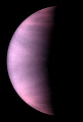
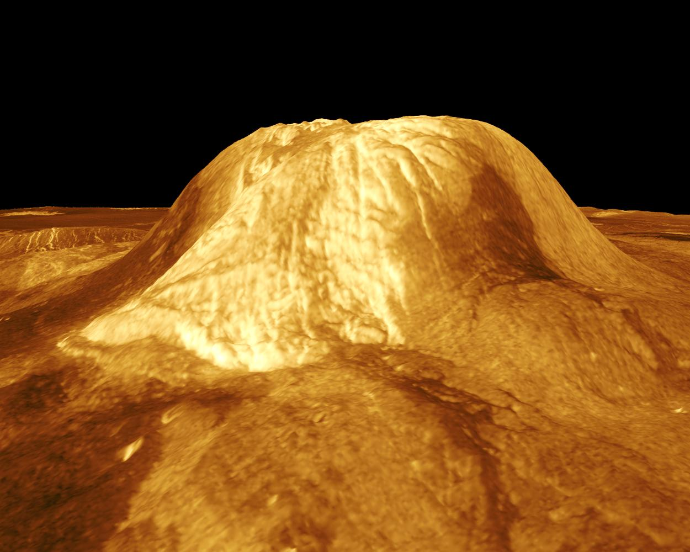
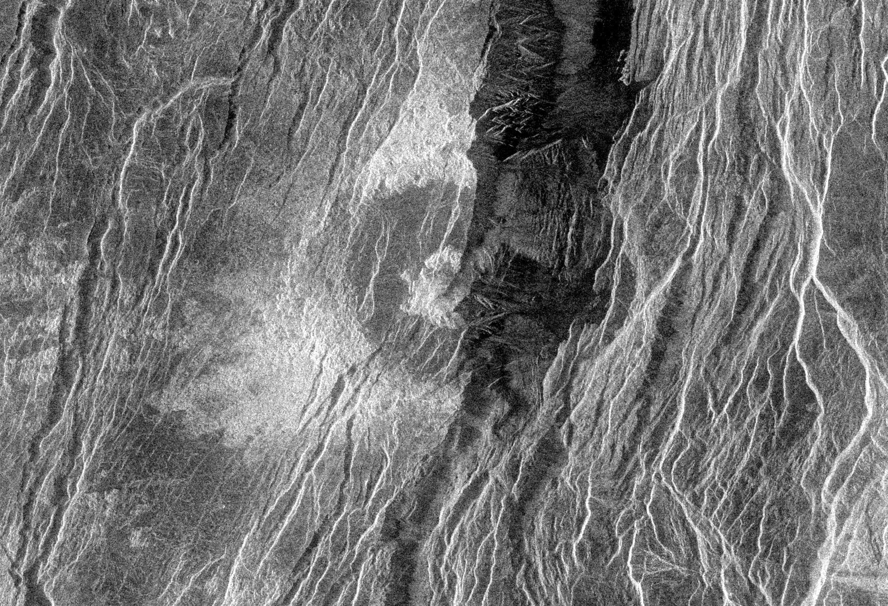
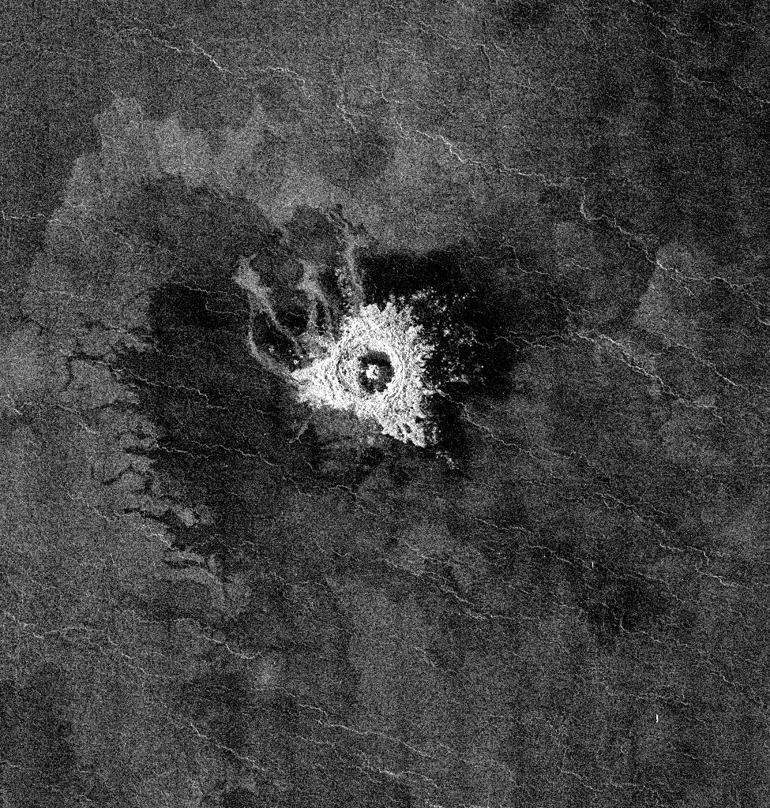

Ogólne informacje
Wenus to druga planeta od Słońca i trzeci najjaśniejszy obiekt na widocznym niebie. Widoczna jest na niebie 3 godziny przed wschodem Słońca przez co została nazwana "Gwiazda Poranną". Jej promień wynosi 6051,8 km. Wenus posiada gęstą atmosferę złożoną z większości dwutlenku węgla i azotu. Obrót Wenus wokół Słońca zajmuje 225 Ziemskich dni a obrót wokół właśnej osi 243 Ziemskich dni.Powierzchnia i budowa
80% powierzchni Wenus stanowią wulkaniczne równiny gładkie i pofalowane. Na Wenus znajduje się ponad 167 wielkich wulkanów w tym aktywnych.



